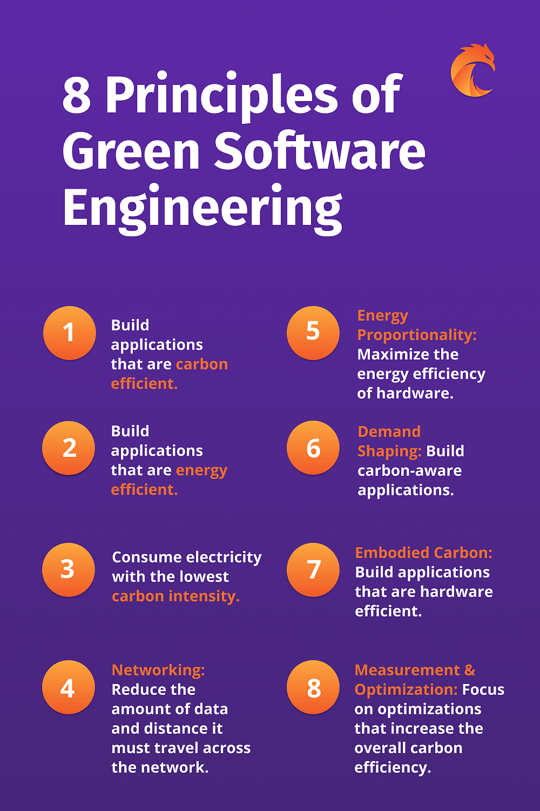

“Green coding” refers to the practice of developing software with an emphasis on environmental sustainability and energy efficiency. Here are some aspects and practices associated with green coding:
Design and implement efficient algorithms to minimize computational resource usage. Write code that optimizes CPU and memory utilization to reduce energy consumption.
Properly manage and release resources (memory, file handles, network connections) to avoid unnecessary energy consumption and improve system efficiency.
Optimize code compilation to produce efficient and lightweight binaries, reducing the energy required during the build process.
Use development tools and environments that provide insights into energy consumption. Some tools can analyze code and identify areas where optimizations can be made for efficiency.
Choose hosting providers and cloud services that prioritize renewable energy sources and have green data center initiatives.
Conduct code reviews with a focus on energy efficiency. Encourage team members to identify and discuss areas where code optimizations can lead to reduced resource usage.
Implement caching strategies to reduce the need for repetitive computations or data retrieval, leading to lower energy consumption.
Design user interfaces that are energy-efficient, considering factors like animation complexity, image sizes, and overall rendering performance.
Implement energy monitoring tools within applications to track and report energy consumption. This transparency can lead to better decision-making in terms of optimizations.
Consider purchasing renewable energy credits to offset the environmental impact of the energy used during software development and deployment.